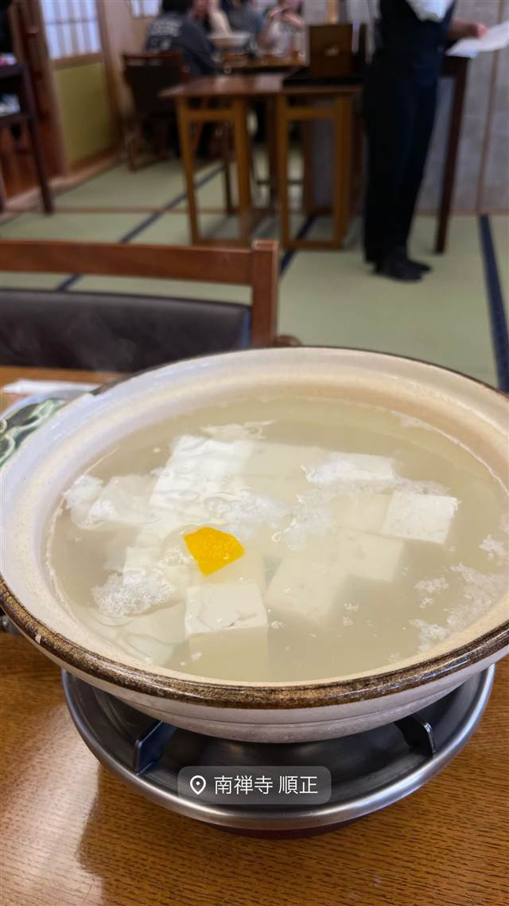

鍋・しゃぶしゃぶ · 湯豆腐 · 南禅寺
南禅寺 順正
蘭学の医学学問所だった書院で味わう湯どうふ
南禅寺 順正
WHY GO
1839年開設の医学学問所だった書院で湯どうふを味わえ国の登録有形文化財
南禅寺門前で湯どうふを供する店。建物の順正書院は1839年に蘭学医・新宮凉庭が開いた医学学問所が前身で、幕末には文化サロンとしても賑わった。1962年から湯どうふ店として営業し、書院は国の登録有形文化財に指定されている。
TRIVIA
豆知識
- 建物はもともと医学校で、蘭学者や大名・文人が集う文化サロンでもあった
- 医学校時代の名残である石門が今も露地庭の入口に残る
REVIEWS
世間の評判
3.50食べログ
日本庭園と湯豆腐の味わい
- 木綿と絹の間のちょうど良い固さの湯豆腐を評価する声が多い
- 鯉が泳ぐ日本庭園や歴史ある建物の雰囲気を評価する声がある
- 価格に対する満足度にばらつきがあるという声もある
食べログ
| 創業 | 湯どうふ店としては1962年（昭和37年）創業。建物の順正書院は1839年（天保10年）開設 |
|---|---|
| 系譜 | 江戸末期の蘭学医・新宮凉庭が老中・間部詮勝の勧めで開いた医学学問所『順正書院』が前身 |
| 看板 | 湯どうふと京会席 |
| こだわり | 南禅寺門前は江戸時代から湯どうふの名物地として知られ、当時の京都案内書にも旅人の名物として記載されている |
| 掲載・評価 | 順正書院は国の登録有形文化財 |
| どこから | 遠方 |
| 営業時間 | 月・火 11:00-14:30、17:00-19:00 水 休み 木〜日 11:00-14:30、17:00-19:00 |
| 予算 | 昼 ¥4,000～¥4,999 夜 ¥5,000～¥5,999 |
| 定休日 | 水曜 |
| 予約 | 予約可 |
| 場所 | 蹴上駅 京都府京都市左京区南禅寺草川町60 |
| メモ | 南禅寺門前にあり、庭園『名教楽地』を眺めながら食事ができる |
食べたもの：湯豆腐